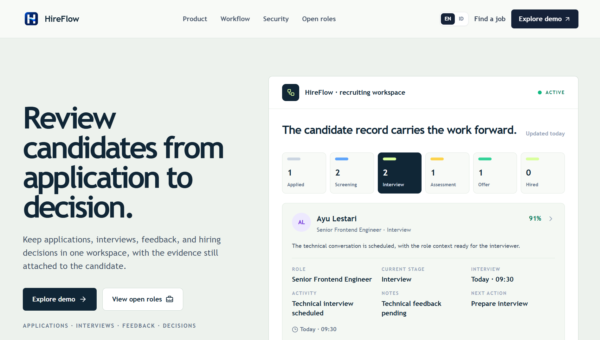
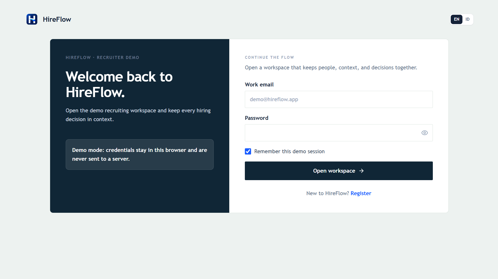
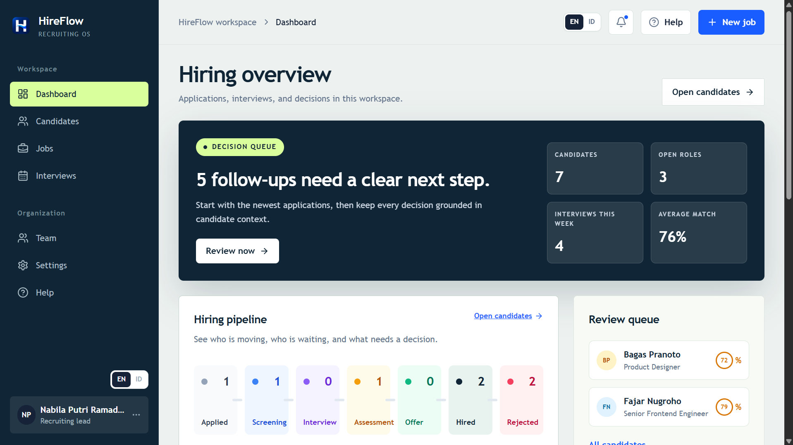
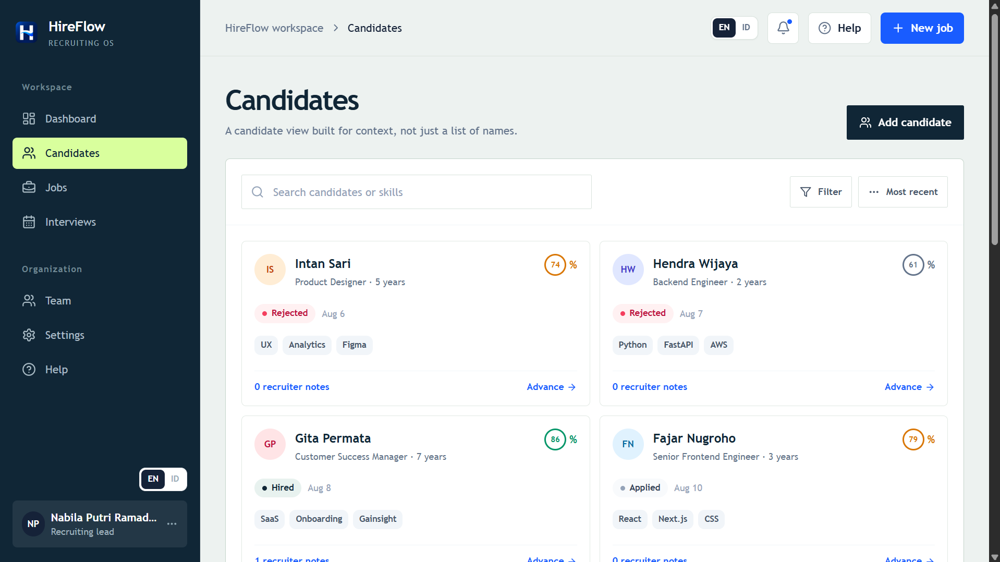
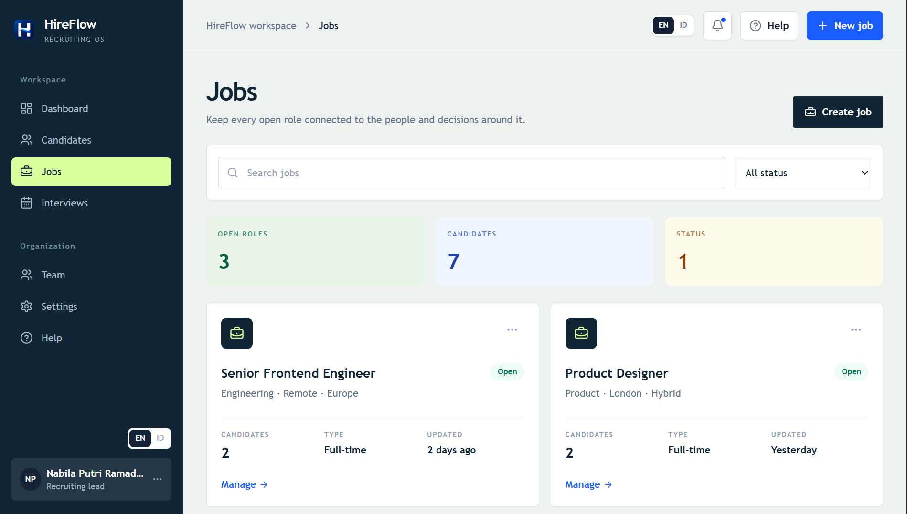
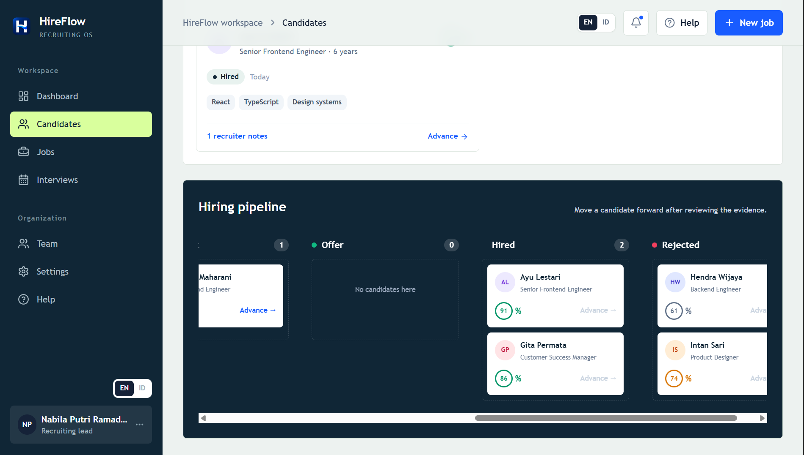

IndonesiaFrontend · FullstackTerbuka untuk peluang kerja
Cuplikan project terbaru01 / 05

Current focusProduct interfaces with a clear next step.
01 / Tentang
Saya suka mengubah kebutuhan yang rumit menjadi pengalaman web yang mudah dipahami.
Saya belajar Teknik Telekomunikasi di Universitas Telkom dan bekerja di area frontend serta fullstack, dengan perhatian pada struktur, responsivitas, dan detail kecil yang membuat produk terasa matang.
Saya M. Rivaldo Destadhio Hamzah, mahasiswa S1 Teknik Telekomunikasi di Universitas Telkom (2022–2026). Saya mengembangkan project web dengan React, JavaScript, TypeScript, Node.js, Express, dan teknologi pendukung lainnya. Saat ini saya mencari kesempatan untuk berkembang sebagai Web Developer atau Fullstack Developer.
01
Frontend yang terukur
Komponen rapi, layout responsif, dan state yang mudah dirawat.
02
Fullstack dengan konteks
Memahami bagaimana UI terhubung dengan API, data, dan kebutuhan pengguna.
03
Belajar lewat project nyata
Setiap project menjadi ruang untuk menguji ide dan memperbaiki cara kerja.
02 / Pengalaman
Pengalaman yang membentuk cara saya belajar dan bekerja.
Beberapa peran yang mempertemukan saya dengan mentoring, komunitas developer, QA, dan pekerjaan teknis lapangan.
Facilitator — Fullstack / CFS-07
Dicoding Coding Camp 2026 powered by DBS Foundation
Memandu peserta melalui praktik coding dan pembelajaran berbasis project.
Mendukung kegiatan belajar Front-End dan Back-End.
Membantu peserta menyelesaikan masalah teknis dan tugas coding.
Mengoordinasikan kegiatan belajar.
Community Builder — Front-End
DCN Telkom University
Mendukung komunitas belajar Front-End.
Membimbing HTML, CSS, JavaScript, dan React.
Mengadakan diskusi teknis dan sesi mentoring.
Mereview project anggota.
Intern
PT Telkom Infrastruktur Indonesia (Infranexia)
Mendukung aktivitas pengukuran redaman optik dengan OTDR.
Membantu aktivitas fusion splicing serta pemeliharaan NGN / Metro.
Memperbarui data teknis dan dokumentasi.
Intern / QA
Telkom Test House
Mengumpulkan data antarmuka RF menggunakan spectrum analyzer.
Membantu menyiapkan laporan Quality Assurance Test.
Mendukung rangkuman dan dokumentasi antarmuka RF.
Memperpanjang dan menyambungkan kabel antena Wi-Fi.
Data Entry Intern
BPS
Memasukkan data sensus penduduk.
Meninjau, memperbaiki, dan memvalidasi data.
03 / Pendidikan
Latar belakang pendidikan.
EDU
Universitas Telkom
S1 Teknik Telekomunikasi
04 / Project
Project adalah cara terbaik untuk melihat bagaimana saya bekerja.
Klik project untuk melihat screenshot, penjelasan, dan teknologi yang digunakan.
Landing page · product overview

Registration

Dashboard

Candidates

Jobs

Pipeline
Klik untuk melihat detail
01Featured work
HireFlow
HireFlow adalah aplikasi web untuk membantu proses rekrutmen melalui pengelolaan kandidat, pipeline, lowongan, interview, dan candidate context dalam satu workspace.
Kontribusi saya
Mengembangkan landing page dan recruiter workspace, termasuk dashboard, manajemen kandidat, jobs, interviews, filter, pipeline, dan detail kandidat.
NERVA adalah aplikasi web untuk klasifikasi tingkat stres mahasiswa yang menggabungkan analisis teks jurnal dengan kuesioner DASS-21 untuk memberikan penilaian stres yang lebih kontekstual. Alur utamanya mencakup input jurnal, pengisian DASS-21, dashboard, riwayat, dan visualisasi hasil.
Kontribusi saya
Kontribusi saya mencakup pengembangan website dengan cakupan fullstack, backend, dan implementasi keamanan pada alur input jurnal, cek DASS-21, dashboard, riwayat, serta hasil visualisasi.
Notes Studio adalah aplikasi catatan berbasis web yang dibuat untuk membuat, mengedit, mencari, menyematkan, mengarsipkan, mengimpor, dan mengekspor catatan. Project ini menggunakan penyimpanan lokal browser sehingga tetap dapat digunakan tanpa backend.
StoryNest adalah aplikasi web untuk menulis dan mengelola cerita pendek. Project ini menyediakan halaman daftar cerita, form penulisan cerita, dan tampilan yang sederhana agar pengguna dapat menyimpan cerita dengan lebih rapi.
HIMO atau Hidden Mood adalah project awal untuk membantu pengguna mencatat kondisi mood dan melihat hasil analisis sederhana. Project ini menjadi dasar pengembangan untuk sistem yang lebih lengkap.
HTMLCSSJavaScriptUI/UX Design
05 / Keahlian
Teknologi yang saya gunakan untuk membuat dan mengirimkan produk web.
Saya memilih tools berdasarkan kebutuhan project, bukan sekadar menambah daftar.